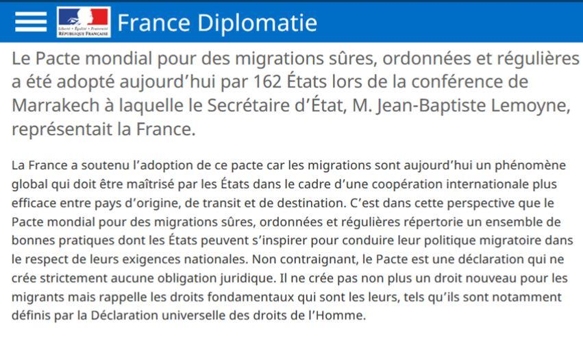
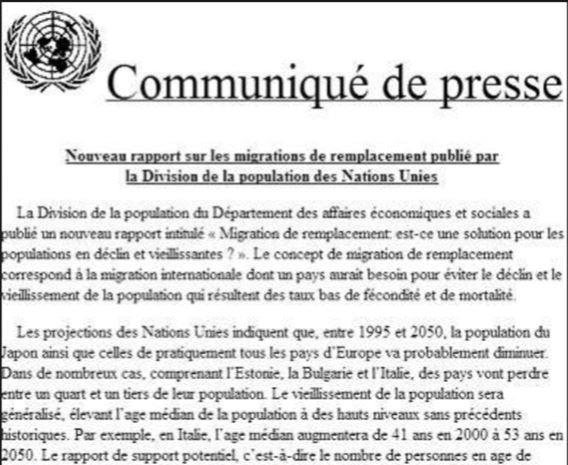

Les 10 et 11 décembre 2018 a été organisée à Marrakech (Maroc) une conférence visant à l’adoption par les États membres de l’ONU du « Pacte mondial pour des migrations sûres, ordonnées et régulières ». Le Président Macron ne s’y est pas rendu mais à confier au secrétaire d’État aux affaires étrangères, Jean-Baptiste Lemoyne, le soin d’y représenter la France.
Ce texte aura, in fine, comme conséquence l’institutionnalisation du communautarisme par l’institutionnalisation des diasporas, la propagande pro-migrants et la persécution des opposants à l’immigration… mais pas seulement !
Le préambule de ce pacte de 41 pages nous donne le ton :
Les migrations ont toujours fait partie de l’expérience humaine depuis les débuts de l’Histoire, et nous reconnaissons qu’à l’heure de la mondialisation, elles sont facteurs de prospérité, d’innovation et de développement durable et qu’une meilleure gouvernance peut permettre d’optimiser ces effets positifs.
Ce pacte pourrait paraître innocent, comme peut l’assurer l’ensemble de la presse « bienpensante » et, en effet, en commençant par souligner que ce pacte est juridiquement non contraignant on peut déjà mettre de côté toute inquiétude… sauf que des précédents légitiment les inquiétudes.
L’inquiétude peu d’ailleurs croitre lorsque l’on met en parallèle ce pacte et le rapport de l'ONU du 17 mars 2000 : « Migration de remplacement : est-ce une solution pour les populations en déclin et vieillissantes ? » qui parle sans détour de migration de remplacement !
Ce rapport prétend qu'il n'y a qu'une seule solution au déclin démographique des Européens autochtones : l'immigration massive en provenance d'autres continents. L'ONU précise que dans un pays où le taux de fertilité est dans la moyenne européenne, il faut chaque année 6 000 immigrés par million d'habitants. Pour le continent européen entier, avec 720 millions d'habitants, les dirigeants de l'ONU veulent donc que chaque année 4 320 000 immigrés non-européens viennent remplacer les Européens autochtones en voie de disparition. En cent ans, jusqu'en 2100, cela voudrait dire qu'environ 400 millions immigrés non-européens seront venus en Europe. À ce moment-là, les Européens autochtones ne seront plus que 170 millions.
Depuis, tous les rapports de l'ONU, toutes les interventions des dignitaires de l'ONU auprès des dirigeants européens, avancent l'argument que pour assurer une forte croissance économique en Europe, il faut une forte immigration non-européenne et chaque nouvelle recommandation de l'ONU augmente encore le débit des flux d'immigration que les Européens autochtones sont priés de rapidement accepter sur le sol européen.
Bref ce que nous vivons actuellement est donc bel et bien décidé par des instances supranationales et, comme le soulignait le député néerlandais Marcel de Graaf devant le parlement européen, « cet accord n’est rien de moins qu’un coup d’état des mondialistes libéraux pro-migrants qui profitera avant tout aux multinationales. »
Le secrétaire général de l’ONU, Antonio Guterres (au centre), à son arrivée à Marrakech, au Maroc, le 10 décembre 2018. AFP/FETHI BELAID
Le « Pacte mondial pour des migrations sûres, ordonnées et régulières » est présenté comme juridiquement non contraignant par ses rédacteurs. Mais ne nous y trompons pas car l’expression « non-contraignant » signifie seulement que les États signataires n’auront pas à réformer leur législation. Il sera toutefois possible à des plaignants de faire valoir la supériorité d’un texte international sur le droit national et ainsi de contraindre à l’application du Pacte. Il en va ainsi de tous les pays qui ont déjà abandonnés leur souveraineté en admettant dans leur système juridique la supériorité des textes internationaux sur les textes nationaux.
Plusieurs points nous semblent éminemment contestables.
Premièrement, il repose tout entier sur l’affirmation, non discutée et non étayée selon laquelle, à l’heure de la mondialisation, les migrations seraient « facteurs de prospérité, d’innovation et de développement durable… » (point 8 du pacte). En réalité, cet objectif engage les États, en se basant sur un postulat erroné. Des études récentes montrent par exemple que les migrations massives des travailleurs des pays du Sud, souvent parmi les plus qualifiés, vers les pays du Nord, appauvrissent le capital humain des pays de départ.
Ce pacte, en présentant les migrants comme des agents économiques mobiles, interchangeables qui viennent répondre ponctuellement ou durablement à des augmentations locales de demande de main-d’œuvre, ne rend pas service aux pays du Sud, tout en plaçant l’Europe dans une situation dangereuse. En exigeant pour les migrants, avec la caution morale des droits de l’Homme, « d’améliorer leur employabilité dans les secteurs en demande de main-d’œuvre » (point 34/h du pacte), les rédacteurs de ce texte risquent de fragiliser davantage les conditions socio-économiques des pays de départ.
Deuxièmement, ce pacte comprend des paradoxes et incohérences. Ainsi, tout en affirmant « le droit souverain des États de définir leurs politiques migratoires nationales » (ce qui n’est déjà plus le cas au sein de l’Union européenne), le texte donne à l’ONU le droit de décider à la place des citoyens des États concernés des politiques publiques qu’ils doivent appliquer et de la place à accorder aux migrants au sein de nos sociétés.
Or, la charte des Nations-Unies est très claire et reconnaît aux États une compétence réservée sur leurs affaires internes.
Troisièmement, et c’est le point le plus inquiétant, en exigeant que les États signataires cessent « d’allouer des fonds publics ou d’apporter un soutien matériel aux médias qui propagent l’intolérance envers les migrants » (point 33/c du pacte), la signature de ce pacte tomberait comme une chape de plomb sur la problématique des migrations en interdisant l’expression d’opinions contradictoires sur le sujet ! Il va bientôt devenir impossible de critiquer tant la politique d’accueil des migrants de Madame Merkel que le grave danger que représente une intégration massive de migrants issus de pays islamiques dans notre pays. Tout comme il deviendra impossible de mentionner le fait que la migration de masse détériore les systèmes de protection sociale. Ce pacte entend donc criminaliser le discours sur l’immigration et c’est donc bien la liberté d’expression qui est, une nouvelle fois, menacée.
L’ONU peut-elle continuer à prétendre défendre des sociétés démocratiques lorsqu’elle encourage les États à ne plus subventionner certains médias qui ne répandent pas une parole politiquement acceptable ? La liberté d’expression, contrairement au droit à la migration, est un droit de l’Homme !
D’autres points de ce pacte sont inquiétants. La 32ème par exemple par lequel, in fine, les Français seront obligés d’admettre comme « normales » les traditions des migrants. Qu’en deviendra-t-il de la polygamie ? Des mariages forcés des fillettes ? Des mutilations génitales ?
Je n'ose pas imaginer ce que vont donner les influences de lois religieuses comme la charia dont on sera bientôt obligés d'admettre les « vertus » ! Ceci se fera d’autant plus facile que le Pape François est ouvertement pour ce pacte et soutenu par la commission des épiscopats de l’Union européenne.
Alors que l’on confisque régulièrement la possibilité de débattre du sujet migratoire, de son impact sur les sociétés d’arrivée et des conditions de sa régulation, la signature de ce texte a entériné les conclusions d’un débat que l’on refuse aux Français. À l’instar d’autres nations, il aurait été légitime, obligatoire, que les Français soient consultés avant la signature de ce pacte et qu’un référendum soit organisé. Mais le gouvernement est bien trop conscient du résultat des urnes et il lui est préférable de s’affranchir de l’avis du peuple pour mieux imposer sa doctrine mondialiste.
Le mouvement des Gilets Jaunes a certainement un peu perturbé nos dirigeants mais il leur aura servi de diversion pour signer cet odieux pacte. Comble de l’ignominie le 10 décembre 2018 alors même que le pacte des migrations est imposé aux Français, le président Macron lors de son intervention pour calmer les Gilets Jaunes, évoque la tenue prochaine de débats sur l’identité nationale et l’immigration : « Je veux aussi que nous mettions d’accord la nation avec elle-même sur ce qu’est son identité profonde, que nous abordions la question de l’immigration. Il nous faut l’affronter ». Mais très vite, le Premier ministre a précisé que l’immigration ne ferait pas partie du débat. L’annonce d’Édouard Philippe a fait aussitôt réagir Marine Le Pen sur Twitter : « Le gouvernement retire l’immigration des thèmes du débat national car il connaît parfaitement l’opposition farouche des Français à une aggravation de l’immigration. Ça n’est plus du déni mais de la censure ! »
Nous avons donc fait un pas de géant pour aller plus encore dans la destruction de notre nation, de notre identité, de notre culture. Quelle sera la prochaine trahison ? L’abandon de la France de son siège au sein du Conseil de sécurité des Nations unies comme le souhaite notamment le vice-chancelier allemand Olaf Scholz ?
Plus que jamais, il est temps pour la France de reprendre en main son destin.
Partager cette page